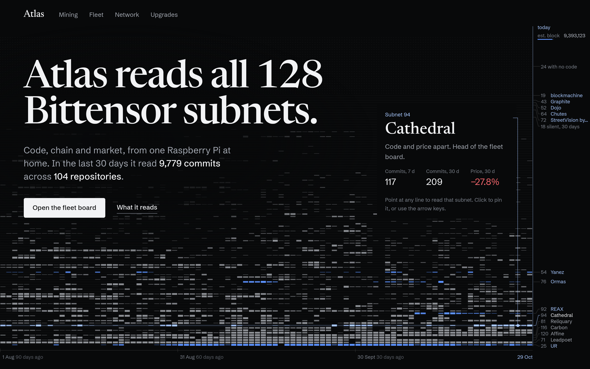
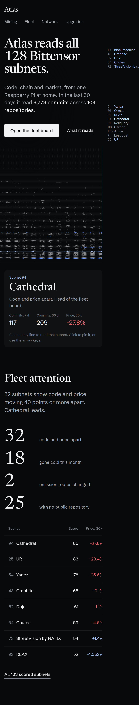

Four ways to move the home page.
Each option runs on the real fixture data and keeps the approved headline. They differ in what moves and why: the data rearranges itself, the camera travels through the data, or the page works as an instrument in your hands. Open each live; scroll, point and drag.
D. Flight and instrument
B's camera flight, then the subnt trader's look: an inverted band, a lead panel and dense rows, with C's board hover on a red field.
- What moves
- The flight; then the band's month total counts up and its commit bar opens; the lead panel cycles the top 3 subnets, bars rise and the running total draws; squares fill row by row; sparklines draw; board names widen on hover; the closing name widens with the scroll.
- Encodes
- Daily commits, who wrote the month's commits, fleet score, authors, last commit, price change, runtime spec gaps, the estimated block.
- Look
- Archivo only, heavy and condensed for figures. Near-black ground, bone ink, signal red. No teal, per DESIGN.md.
- Port
- About 2 to 3 days. Three.js is new; everything below the flight is plain markup and small client components. Needs DESIGN.md changes for type, colour and the red field.
A. Re-sort
One field of 128 subnet marks that regroups itself as you scroll.
- What moves
- Each subnet's 90-day strip flies between four arrangements on a held stage: by number, ranked by commits, code against price, then the head of the fleet board.
- Encodes
- Daily commits per subnet, 30-day commits, 30-day price change, fleet tier.
- Look
- Funnel Display and Funnel Sans. Current dark ground, signal blue.
- Port
- About 1 to 1.5 days. The canvas engine moves into one client component; scroll progress can come from
motion'suseScroll, so no new dependency. Funnel needs a DESIGN.md decision.
B. Fly-through
The strata as a 3D terrain, with the camera travelling through it on scroll.
- What moves
- The camera, from a high oblique view of all 128 subnets down along 90 days to today, then round to the busiest rows. Pointing lifts a row.
- Encodes
- Daily commits as bar height, sediment order, fleet tier, the estimated block.
- Look
- Current identity kept: Newsreader, Schibsted Grotesk, signal blue. It shows what motion alone changes.
- Port
- Medium, about 2 days. Three.js is a new dependency (plain Three in one client component, no react-three-fiber). GSAP can be swapped for
motion. Needs WebGL: browsers without it get a flat 2D field.
C. Live instrument
A 90-day scrubber that recounts the figures and re-ranks the subnets as you drag.
- What moves
- The busiest subnets re-rank as the time cursor moves, and their names stretch or narrow with their share of activity. The block clock rolls every 12 seconds.
- Encodes
- Rolling 7-day commits per subnet, total commits per day, the estimated block.
- Look
- Archivo with its width axis, one family. Cool light ground, one hot signal colour.
- Port
- Low to moderate, about a day.
motionis already installed and drives the re-rank and digit rolls. Archivo moves tonext/font; a light token set and DESIGN.md changes are needed.
Today's page, for comparison
Comp F, Strata as an instrument, as it ships now.

